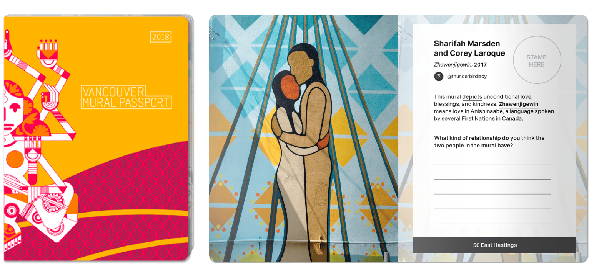

Vancouver Mural Festival Classroom Kit
A 13-week interaction design project to design an alternative to the current Vancouver Mural Festival mural walking tour that would increase accessibility and inclusivity of people not already in the mural art community.
Outcome: An art lesson planning kit with materials for grades 6 and 7 classrooms.
Role
- Applying user-centered design methods such as personas and user journey frameworks
- Rapidly prototyping visual designs and interactions
- Planning and facilitating user testing and research
- Planning a co-creation workshop
Tools
- Illustrator
- InDesign
- Photoshop
When
May - August 2018

Problem Statement
One of our client’s services was a private mural walking tour. However, due to a lack of resources, it was under-developed. The tour was only a small section on one page of the website, and there was only one permanent tour guide in charge of facilitating the tours as well as training other volunteer tour guides.
Ethnographic Research
My team decided to go on a walking tour to get a first-hand experience of what the tours were like. I took photos to document any pain points we noticed along the way, for analysis once we were back in the studio.
Journey Map + Persona
Using observations from our first-hand research, and information from client interviews and operations, we created a journey map and persona to get a holistic view of the design problem and opportunities.


Key Frustrations
The 90-minute walking tour was not accessible to all audiences, and was overwhelming due to the length and amount of information provided. As the goal of our client was to foster the mural art community in the area, it was important that the murals be made more accessible. A bonus would be to leverage the year-round walking tour to increase attendance rates for the annual mural festival.
Rapid Prototyping
After doing a 3-day design sprint, we created three fleshed out initial proposals with the goal of providing a more accessible alternative to the walking tour to a wider audience. I was primarily responsible for “Mural Hunt”, an app that gamified the mural viewing experience to attract younger audiences and provided incentives to bridge the gap between the tour and the festival.

Client Check-In
Using our quick prototypes as the basis for our co-creation workshop, we engaged our client in ideation activities to uncover more of our client's long-term goals and values, as well as identify some audiences our clients wanted to engage with.


How might we engage young students with murals through existing channels? How might we turn students into advocates for murals and art?
Finding An Opportunity
We found an opportunity to engage with our client's goals through designing for educational systems, since they aligned perfectly with the BC Ministry of Education goals for arts education in schools:
“Pursue a lifelong interest in the arts and gain the confidence to create and contribute to the local/national/global art community as an individual and/or group.”
This supported our client's long-term goal of increasing mural literacy and awareness in the city, while also building new relationships in the education sector.
User Testing
Conducting user tests with teachers and teacher candidates allowed us to gauge the feasibility and usefulness of our prototypes. Afterwards, we used affinity diagramming to organize the feedback based on priority, allowing us to manage our time efficiently to deliver a high quality prototype by our deadline.

Supportive, Not Directive
During user testing, teacher candidates reinforced that the copy in the kit should be more descriptive and conversational. I revised the copy to describe what teachers could do with the items rather than what they’re intended to do, to avoid telling teachers how to do their jobs.

Initially, each spread had a light-hearted one-liner for a friendly, conversational tone. Though well-received, teachers were more interested in what benefits the kit could offer. As a result, I replaced the jokes with descriptions of the kit items, as well as value propositions for teachers.
Balancing Fun With Educational
Discussion questions replaced the large stamp area to encourage students to practice their critical thinking, which was a major goal of the BC curriculum.
Learn At Your Pace
I worked with one teammate to block out the information design of the cards using whiteboard wireframes. We considered various sets of icons and shapes to represent the difficulty level and duration of the activities. However, we received feedback from teachers that different students and classes have different skill levels.

Each card has a border at the top, colour-coded to a “Big Idea”, taken straight from the BC curriculum in order to relate the ideas behind the lessons to teachers in terms they would already be familiar with.

Reflection
Because this project was a collaboration with a client, I was required to consider feasibility and cost more than in other hypothetical school projects. When selecting what the kit would contain, I looked up production costs in order to judge whether the benefits of including the item outweighed the potential cost for our client.
I also gained more knowledge and familiarity with designing in the education domain, as our target audience were teachers and students of grades 6 and 7 classrooms. I conducted research into the current BC curriculum requirements, as well as arts activities that helped students build fundamental skills such as social bonding, critical thinking, and learning through play.
Project created with Brandon Lal, Venus Lau, Breanne Lewis, and Delicia Li.